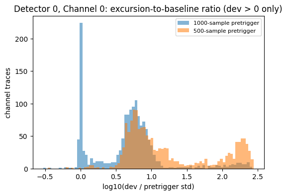
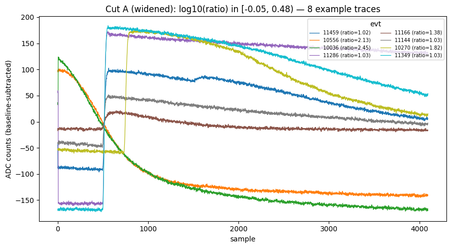
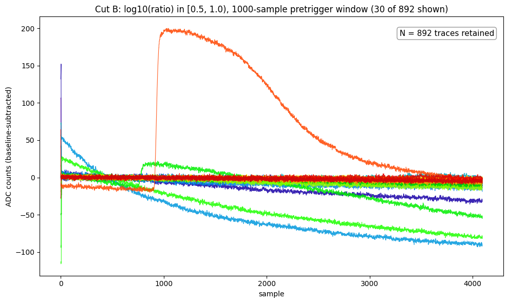
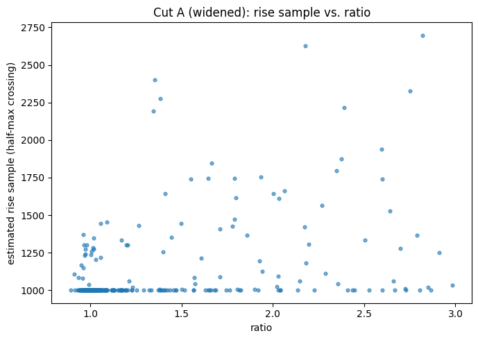
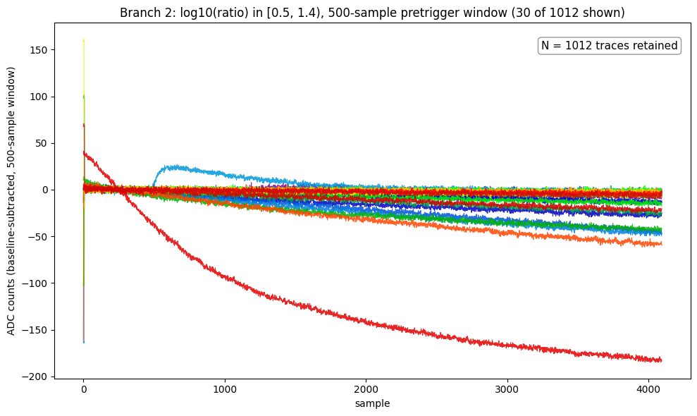
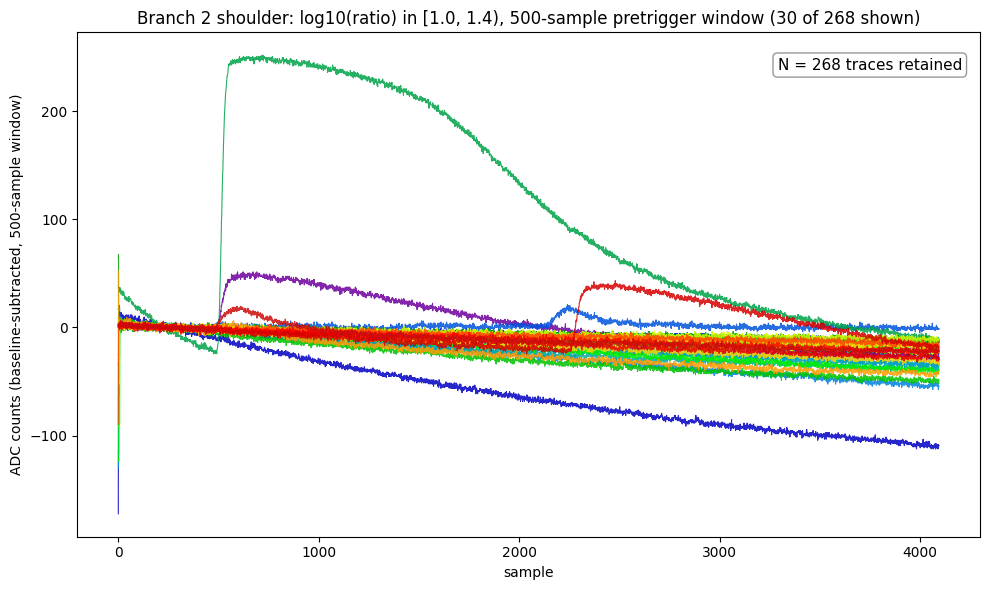
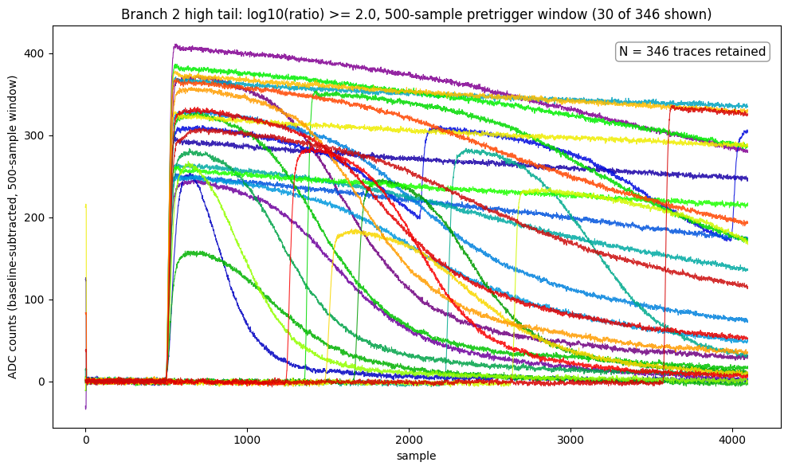
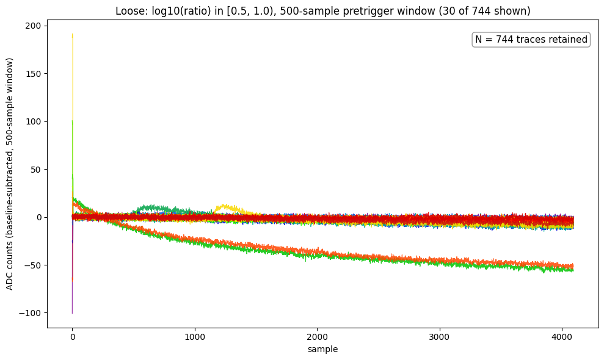
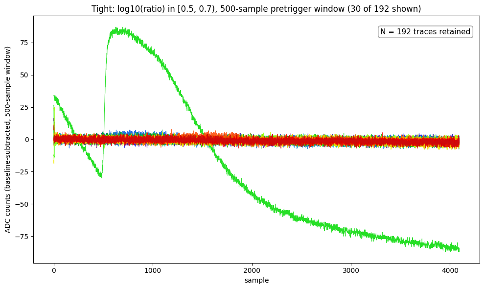

Notebooks and library files this note rests on, each pinned to the commit that produced the results below:
07221203_2025_dump1_noise.ipynb — the main notebook for everything below. Pinned to 8b0ab40.dump1_noise_pulses.ipynb — the original first-pass notebook, superseded but kept for history. Pinned to c892af4.python/ — the pulse library the notebook now uses (see Note 1a). Pinned to 085aa3d.Pick out clean noise traces on Detector 0, Channel 0 of series 07221203_2025, dump F0001 (Run76: Side2, PuBe, Pb&poly lead stack and borax, −83.2 V), as the input to a noise-PSD study. The dump has 4551 channel groups; Detector 0 / Channel 0 contributes 1517 traces of 4096 samples each.
Let xi be sample i of a trace (i = 0 … 4095, in ADC counts), N the length of the pretrigger window (1000 or 500 samples; both are compared below), and g = 10 the number of leading glitch samples that are skipped.
| Quantity | Definition | Library function |
|---|---|---|
bmean | Mean of xi over the pretrigger window, i = g … N−1 | pretrigger_mean |
bstd | Standard deviation of the same samples (population form, divisor N−g) | pretrigger_std |
dev | Largest deviation from the baseline after the pretrigger window, either polarity: max over i = N … 4095 of |xi − bmean| | max_deviation |
ratio | dev / bstd | excursion_ratio |
log10(ratio) | Base-10 logarithm of ratio, the quantity plotted and cut on throughout this note (a trace with dev = 0 would give −∞ and is excluded; none occur here) | log_excursion_ratio |
ratio is dimensionless: it is the size of the trace’s largest post-pretrigger excursion measured in units of the trace’s own baseline scatter, so it does not depend on the overall scale of the trace. A large ratio means something after the pretrigger window stands well above the baseline noise (a pulse, a drift, or simply the largest noise fluctuation); what values to expect for pure noise, and what a small ratio means, is worked out in “First cut, and why it is misleading” below.
Some traces have a brief (1–5 sample) electronic step glitch at the very start, which is why the first g = 10 samples are skipped in bmean and bstd. That fixes the glitch but not a real pulse that reaches into the pretrigger window.
dev is measured only after the pretrigger window on purpose. Measuring it over the same samples that set bstd puts a hard floor near ratio ~ 1 whatever threshold is used, which made an initially requested threshold of 0.5 impossible to reach.
The first “good noise” cut kept traces with bstd below its own 75th percentile and ratio below its own 25th percentile (bstd < 32.48, ratio < 1.93): 41 of 1517 traces. Plotting log10(ratio) for all traces shows two features: a sharp spike near 0 and a broad hump from about 0.5 to 1.4.
Not to be confused with the 21-trace good_noise_traces.csv selection that feeds Note 3: that comes from the original notebook, with different scope, thresholds and baseline definition, and shares no events with these 41. Note 3 compares the two.
Repeating the calculation with the pretrigger window shortened from 1000 to 500 samples changes the picture:
log10(ratio) 2.0–2.4: pulses that start between sample 500 and 1000 are correctly seen as excursions with the shorter window, but were swallowed into the baseline with the longer one.
log10(dev/bstd) for Detector 0 / Channel 0, 1000-sample window vs. 500-sample window overlaid. The near-zero spike exists only with the 1000-sample window.The reason is extreme-value statistics. dev is the maximum over roughly 3000 samples, so even pure Gaussian noise lands around ratio ~ 3–8 (log10 0.5–0.9), not near 1. A trace only reaches ratio ~ 1 if its own bstd is inflated, i.e. its pretrigger window already contains part of a pulse or a slow drift. The low-ratio spike is contamination, not quiet noise — the naive “smaller ratio means quieter” expectation is backwards.
Widening the near-zero slice to log10(ratio) in [−0.05, 0.48) gives “Cut A” (417 traces); the broad hump [0.5, 1.0) on the same window gives “Cut B” (892 traces).


pulse_quantities.rise_sample, a half-maximum-crossing heuristic that is tagged under_development and has only been used on this one analysis. Treat it as a working hypothesis. In the notebook this section is collapsed by default and carries the same warning.
Hypothesis: if the Cut A pulses have similar amplitude, then the later a pulse rises, the less of the pretrigger window it contaminates, so bstd is smaller and ratio larger. Estimating a rise sample per trace (first post-pretrigger sample crossing half of dev) over all 417 traces gives a Pearson correlation of 0.45 between ratio and rise sample, with rise samples spanning 1000–2698. The scatter has two components: a floor at exactly 1000 (pulses that already crossed half-maximum inside the pretrigger window, so the method reports the window boundary), and a genuine rising trend above it (ratio 1.3–2.9 with rise sample 1200–2700). Consistent with the hypothesis, but not independently verified.

ratio; correlation 0.45. Unverified — see the warning above.Instead of refining Branch 1, cut directly on the clean hump of the 500-sample window. All of these use the 500-sample pretrigger window and dev > 0.
| Cut | Window | log10(ratio) | Traces (of 1517) |
|---|---|---|---|
| “Good noise” (first cut) | 1000 | bstd < 32.48 (p75) and ratio < 1.93 (p25), i.e. log10(ratio) < 0.29 | 41 |
| Cut A (widened) | 1000 | [−0.05, 0.48) | 417 |
| Cut B | 1000 | [0.5, 1.0) | 892 |
| Branch 2 | 500 | [0.5, 1.4) | 1012 |
| shoulder | 500 | [1.0, 1.4) | 268 |
| high tail | 500 | ≥ 2.0 | 346 |
| Loose | 500 | [0.5, 1.0) | 744 |
| Tight | 500 | [0.5, 0.7) | 192 |
Cut B and Loose cover the same log10(ratio) range, [0.5, 1.0), but on different pretrigger windows: Cut B uses 1000 samples (892 traces), Loose uses 500 (744 traces). Within Branch 2, Loose is the wider of two narrowed cuts: it stops short of the shoulder, [1.0, 1.4), where contamination starts creeping in, but keeps the most traces. Tight, [0.5, 0.7), is narrower still and cleaner, at the cost of statistics. They are the library’s excursion_band_loose and excursion_band. Neither is claimed to be the ideal noise selection; the names only say how wide the slice is.





Moving down in ratio makes the selection cleaner: contamination increases toward the shoulder, and the high tail is real pulses. The Tight slice is the cleanest, but even it lets a few real pulses through (13 of its 192, found in Note 6).
excursion_band), and the Loose cut is excursion_band_loose; see Note 1a.rise_sample needs checking against noisy and multi-peak traces first.